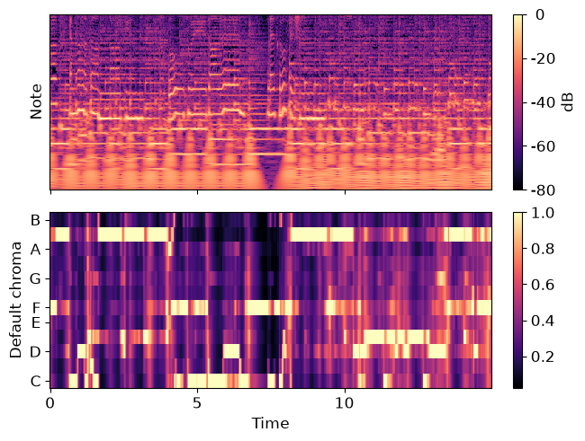
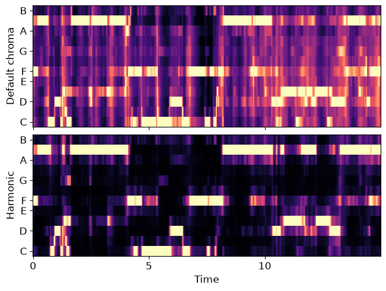
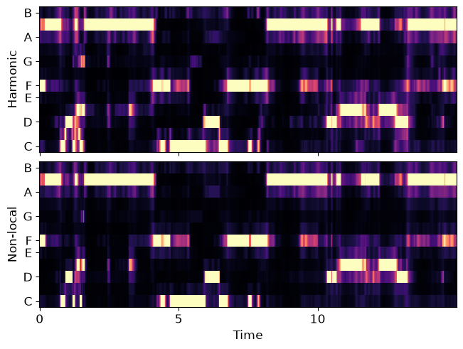
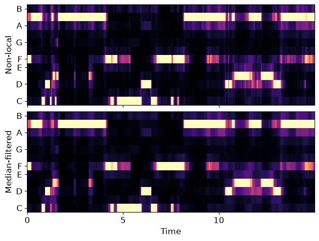
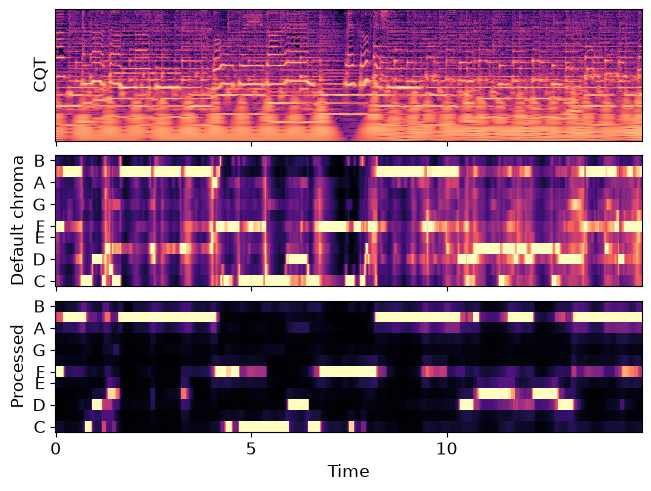
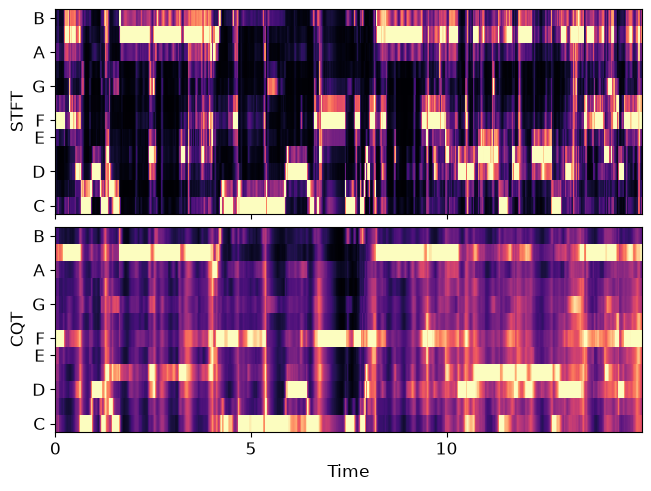
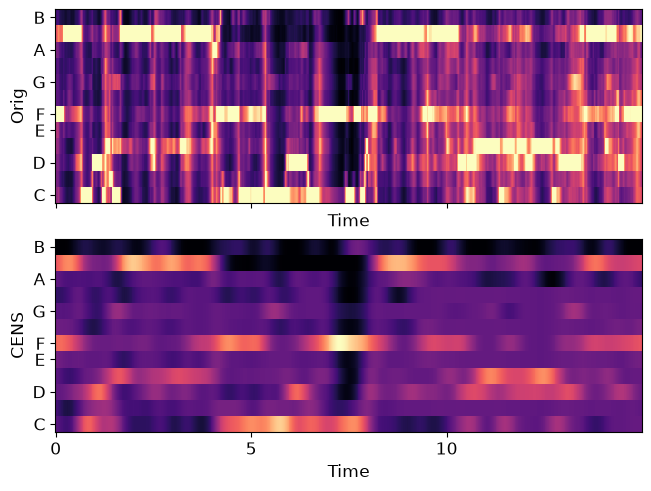

Note
Go to the end to download the full example code.
Enhanced chroma and chroma variants#
This notebook demonstrates a variety of techniques for enhancing chroma features and also, introduces chroma variants implemented in librosa.
Enhanced chroma#
Beyond the default parameter settings of librosa’s chroma functions, we apply the following enhancements:
Harmonic-percussive-residual source separation to eliminate transients.
Nearest-neighbor smoothing to eliminate passing tones and sparse noise. This is inspired by the recurrence-based smoothing technique of Cho and Bello, 2011.
Local median filtering to suppress remaining discontinuities.
# Code source: Brian McFee
# License: ISC
# sphinx_gallery_thumbnail_number = 5
import numpy as np
import scipy
import matplotlib.pyplot as plt
import librosa
- We’ll use a track that has harmonic, melodic, and percussive elements
Karissa Hobbs - Let’s Go Fishin’
y, sr = librosa.loadx('fishin')
First, let’s plot the original chroma
chroma_orig = librosa.feature.chroma_cqt(y=y, sr=sr)
# For display purposes, let's zoom in on a 15-second chunk from the middle of the song
idx = tuple([slice(None), slice(*list(librosa.time_to_frames([45, 60])))])
# And for comparison, we'll show the CQT matrix as well.
C = np.abs(librosa.cqt(y=y, sr=sr, bins_per_octave=12*3, n_bins=7*12*3))
fig, ax = plt.subplots(nrows=2, sharex=True)
img1 = librosa.display.specshow(C[idx], vscale='dBFS',
y_axis='cqt_note', x_axis='time', bins_per_octave=12*3,
ax=ax[0])
librosa.display.colorbar_db(img1, ax=ax[0])
ax[0].label_outer()
img2 = librosa.display.specshow(chroma_orig[idx], y_axis='chroma', x_axis='time', ax=ax[1])
fig.colorbar(img2, ax=[ax[1]])
ax[1].set(ylabel='Default chroma')

We can do better by isolating the harmonic component of the audio signal. We’ll use a large margin for separating harmonics from percussives:
y_harm = librosa.effects.harmonic(y=y, margin=8)
chroma_harm = librosa.feature.chroma_cqt(y=y_harm, sr=sr)
fig, ax = plt.subplots(nrows=2, sharex=True, sharey=True)
librosa.display.specshow(chroma_orig[idx], y_axis='chroma', x_axis='time', ax=ax[0])
ax[0].set(ylabel='Default chroma')
ax[0].label_outer()
librosa.display.specshow(chroma_harm[idx], y_axis='chroma', x_axis='time', ax=ax[1])
ax[1].set(ylabel='Harmonic')

There’s still some noise in there though. We can clean it up using non-local filtering. This effectively removes any sparse additive noise from the features.
chroma_filter = np.minimum(chroma_harm,
librosa.decompose.nn_filter(chroma_harm,
aggregate=np.median,
metric='cosine'))
fig, ax = plt.subplots(nrows=2, sharex=True, sharey=True)
librosa.display.specshow(chroma_harm[idx], y_axis='chroma', x_axis='time', ax=ax[0])
ax[0].set(ylabel='Harmonic')
ax[0].label_outer()
librosa.display.specshow(chroma_filter[idx], y_axis='chroma', x_axis='time', ax=ax[1])
ax[1].set(ylabel='Non-local')

Local discontinuities and transients can be suppressed by using a horizontal median filter.
chroma_smooth = scipy.ndimage.median_filter(chroma_filter, size=(1, 9))
fig, ax = plt.subplots(nrows=2, sharex=True, sharey=True)
librosa.display.specshow(chroma_filter[idx], y_axis='chroma', x_axis='time', ax=ax[0])
ax[0].set(ylabel='Non-local')
ax[0].label_outer()
librosa.display.specshow(chroma_smooth[idx], y_axis='chroma', x_axis='time', ax=ax[1])
ax[1].set(ylabel='Median-filtered')

A final comparison between the CQT, original chromagram and the result of our filtering.
fig, ax = plt.subplots(nrows=3, sharex=True)
librosa.display.specshow(C[idx], vscale='dBFS',
y_axis='cqt_note', x_axis='time',
bins_per_octave=12*3, ax=ax[0])
ax[0].set(ylabel='CQT')
ax[0].label_outer()
librosa.display.specshow(chroma_orig[idx], y_axis='chroma', x_axis='time', ax=ax[1])
ax[1].set(ylabel='Default chroma')
ax[1].label_outer()
librosa.display.specshow(chroma_smooth[idx], y_axis='chroma', x_axis='time', ax=ax[2])
ax[2].set(ylabel='Processed')

Chroma variants#
There are three chroma variants implemented in librosa: chroma_stft, chroma_cqt, and chroma_cens. chroma_stft and chroma_cqt are two alternative ways of plotting chroma. chroma_stft performs short-time fourier transform of an audio input and maps each STFT bin to chroma, while chroma_cqt uses constant-Q transform and maps each cq-bin to chroma.
A comparison between the STFT and the CQT methods for chromagram.
chromagram_stft = librosa.feature.chroma_stft(y=y, sr=sr)
chromagram_cqt = librosa.feature.chroma_cqt(y=y, sr=sr)
fig, ax = plt.subplots(nrows=2, sharex=True, sharey=True)
librosa.display.specshow(chromagram_stft[idx], y_axis='chroma', x_axis='time', ax=ax[0])
ax[0].set(ylabel='STFT')
ax[0].label_outer()
librosa.display.specshow(chromagram_cqt[idx], y_axis='chroma', x_axis='time', ax=ax[1])
ax[1].set(ylabel='CQT')

CENS features (chroma_cens) are variants of chroma features introduced in Müller and Ewart, 2011, in which additional post processing steps are performed on the constant-Q chromagram to obtain features that are invariant to dynamics and timbre.
Thus, the CENS features are useful for applications, such as audio matching and retrieval.
- Following steps are additional processing done on the chromagram, and are implemented in chroma_cens:
L1-Normalization across each chroma vector
Quantization of the amplitudes based on “log-like” amplitude thresholds
Smoothing with sliding window (optional parameter)
Downsampling (not implemented)
A comparison between the original constant-Q chromagram and the CENS features.
chromagram_cens = librosa.feature.chroma_cens(y=y, sr=sr)
fig, ax = plt.subplots(nrows=2, sharex=True, sharey=True)
librosa.display.specshow(chromagram_cqt[idx], y_axis='chroma', x_axis='time', ax=ax[0])
ax[0].set(ylabel='Orig')
librosa.display.specshow(chromagram_cens[idx], y_axis='chroma', x_axis='time', ax=ax[1])
ax[1].set(ylabel='CENS')

Total running time of the script: (0 minutes 11.155 seconds)